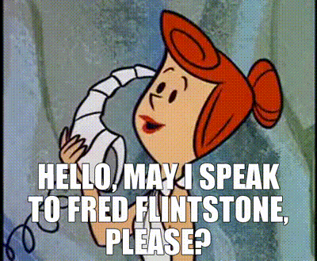
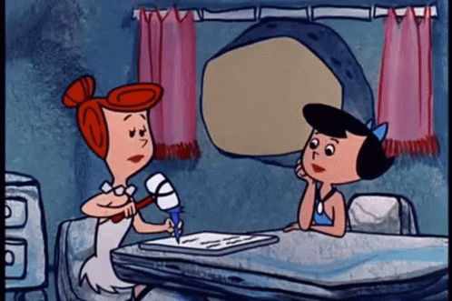

Fullscreen mode
Just press »F« on your keyboard to show your presentation in fullscreen mode. Press the »ESC« key to exit fullscreen mode.
Overview mode
Press "Esc" or "o" keys to toggle the overview mode on and off. While you're in this mode, you can still navigate between slides, as if you were at 1,000 feet above your presentation.
Python and The Basics of Programming.
Lesson 1
Author: Egoshkin Danila Igorevich
Base Data Types

In the beginning - people started to speak.
Then...???
So we need some types to count:
int number = 5; // Counting on fingers
float numberPi = 3.14f; // With FLOATing point ****.******
double bigNumberPi = 3.1415926535 8979323846 2643383279 ...;
What next...???
Writing:
char ch = 'A'; // Only one charachter
char ch_srt[100] = "Hello 1"; // 100 charachters
Logic:
bool isAlive {true};
bool isDead {false};
std::cout << "isAlive: " << isAlive << "\n";
std::cout << "isDead: " << isDead << "\n";
That is all Folks!

But wait... What about pictures, music, etc
ANSI Image
Image by color palette

Image by RGB (Read, Green, Blue)

RAM memory

int x = 5;
cout << "sizeof(x) = " << sizeof(int) << " bytes" << endl; // 4 bytes
cout << "sizeof(x) = " << sizeof(x) << " bytes" << endl; // 4 bytes
using System.Runtime.InteropServices;
int x = 5;
Console.WriteLine("sizeof(x) = " + sizeof(int));
Console.WriteLine(System.Runtime.InteropServices.Marshal.SizeOf(x));
Console.WriteLine(Marshal.SizeOf(x)); // using System.Runtime.InteropServices;
import sys
int x = 5;
sys.getsizeof(x)
# 28 bytes
sys.getsizeof('this')
# 38
sys.getsizeof('this also')
# 48
Static typing vs Dynamic typing
Static typing C++
int number = 5;
float numberPi = 3.14;
char ch = 'A';
string str = "Hello"
Dynamic typing
number = 5;
numberPi = 3.14;
ch = 'A';
str = "Hello"
#include <typeinfo>
//...
cout << "typeid(100).name() = " << typeid(100).name() << endl;
cout << "typeid(string).name() = " << typeid("string").name() << endl;
cout << "typeid('A').name() = " << typeid('A').name() << endl;
int number = 5;
Console.WriteLine(number.GetType());
string str = "Hello World!";
Console.WriteLine(str.GetType());
float[] array = {1.5f, 2.5f, 3.5f};
Console.WriteLine(array.GetType());
print(type('string')) # <class 'str'>
print(type(100)) # <class 'int'>
print(type([0, 1, 2])) # <class 'list'>
Links: